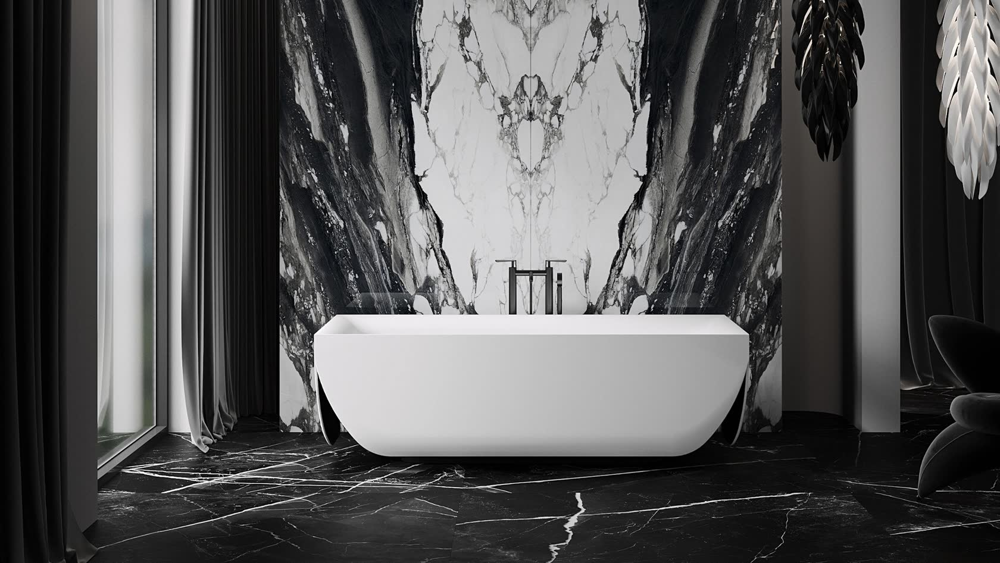
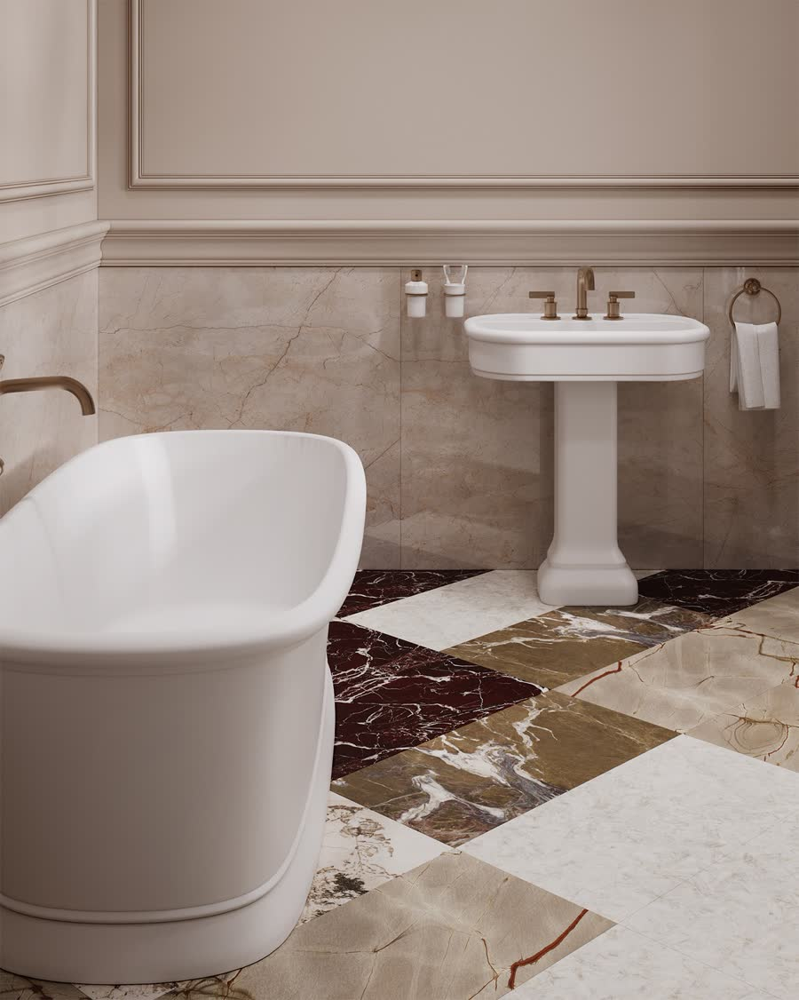

От рендера к фотографии
Ваш рендер.
Новый свет.
Загрузите рендер, выберите свет и сравните с оригиналом.
Проверяем, доступен ли Mac для обработки.
Как работает
Три шага к результату
- 01
Загрузить
Рендер из конструктора — PNG, JPG, WebP или TIFF. Лист согласования можно обрезать до изделия.
- 02
Выбрать свет
Бережный, студийный, дневной, тёплый, контрастный или светлый каталог. Модель работает на Mac владельца.
- 03
Проверить и сохранить
Разделитель «до / после», увеличение и возврат детали из оригинала. Затем PNG или интерактивное сравнение.

Доступ по приглашению
Студия открывается по полной ссылке-приглашению от владельца. Для работы нужен только браузер: устанавливать программу и модели не требуется.
Обработку выполняет Mac владельца. Когда он выключен, спит или не подключён к интернету, студия временно недоступна.
Изображения передаются на этот Mac и сохраняются у владельца. Генеративная модель может изменить детали — сравните результат с оригиналом перед использованием.